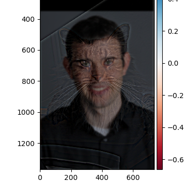
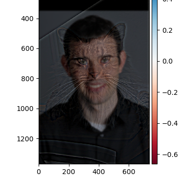
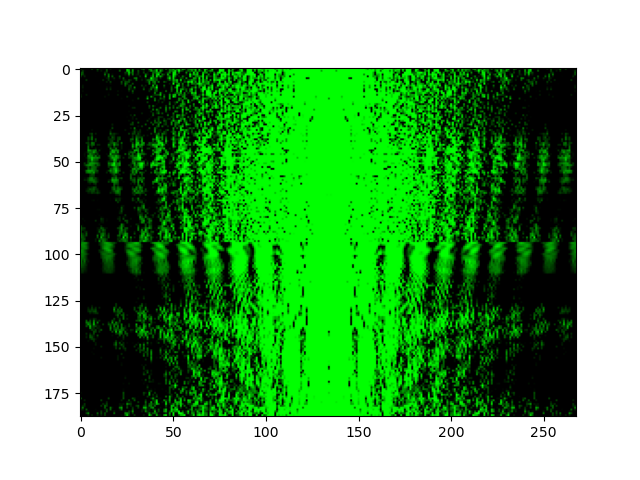
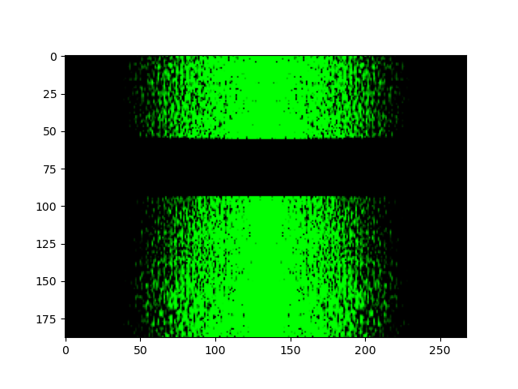
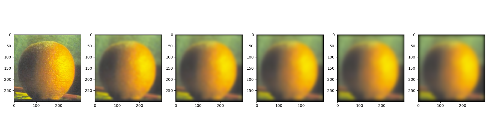

CS 180 Project 2: Fun with Filters and Frequencies!
Jillian Goldberg (SID: 3035565792)
Overview
The goal of this project is to use image processing techniques and build intuitions about 2D convolutions and filtering.
This includes:
Fun with Frequencies
1.1 Finite Difference Operator
1.2 Derivative of Gaussian (DoG) Filter
2.1 Image "Sharpening"
2.2 Hybrid Images
2.3 Gaussian and Laplacian Stacks
2.4 Multiresolution Blending (a.k.a. the oraple!)
Part 1 Questions
(15 points) Include a brief description of gradient magnitude computation.
The gradient magnitude computation is performed by taking the derivative in the x and y to obtain components
dx and dy. Then, we can plut them into this formula:
gradient_f = np.sqrt(f_x^2 + f_y^2)
(15 points) Answer the questions asked in part 1.2
Using the gaussian threshold instead of the finite difference results in much less noise.
This is because the gaussian threshold is able to cut out some of the noise that we saw in part 1.1.
The resulting images in part 1.2 are the same.
Project Points
20 points for the implementation of all four parts of the project.
Included in the main.ipynb file.
15 points for the Unsharp Masking
taj

mom and grandma (blurred then sharpened)
5 points for hybrid images and the Fourier analysis
5 points for including at least two hybrid image examples beyond the first (including at least one failure);
nutmeg and derek

 

mom and dad
chubs and log
mom and dad (failed)


fourier analysis for chubs and log
chubs

log
chubs high pass

log low pass

15 points for multiresolution blending:
apple gaussian
orange gaussian

apple laplace
orange laplace
apple half
orange half
blending result
5 points for including at least two multiresolution blending examples beyond the apple+orange, one of them with an irregular mask.
putting sunglasses on chubs!
chubs laplacian
sunnys laplacian
mask gaussian
final result!
thank you for reading! - jillian goldberg